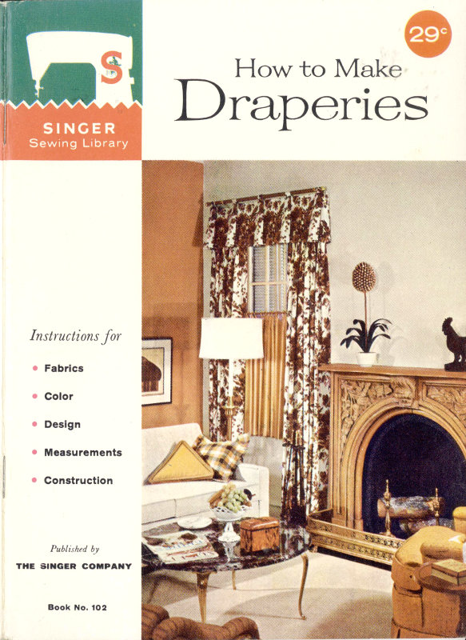
29c
Published by
THE SINGER COMPANY
Book No. 102
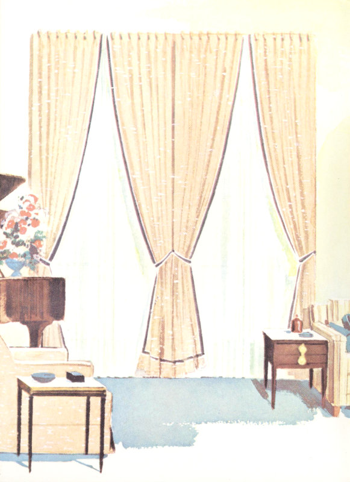
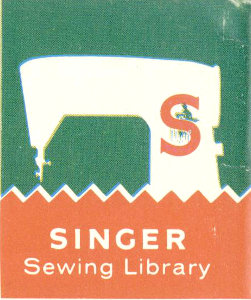
Copyright© 1960 by The Singer Company
Copyright under International Copyright Union • All Rights Reserved under Inter-America Copyright Union • No part of this book may be reproduced in any manner whatsoever without written permission.
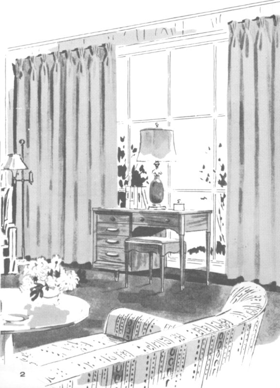
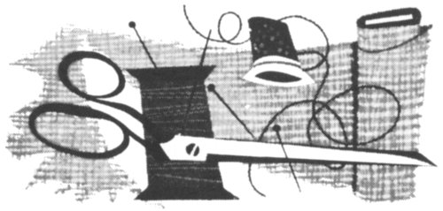
Drapery fabrics are available to us today in an overwhelming variety for every decor—not only in the traditional fabrics, but also in the many new synthetics and blends.
Whether the room is traditional, modern, formal or informal, you need only visit the drapery fabric department to realize what a wide choice of fabrics are available in either group.
Windows are so much a part of the background that the fabric chosen, its texture, color and line, and the design of the curtains, draperies and slip covers must be in keeping with the atmosphere of the room and contribute to the over-all effect.
For the very formal treatment, you’ll want to choose something in the Damask designs, taffetas, moires, brocades, satins, brocatelles or the many blends of the pure and man-made fibers, some with metallic threads woven in. Fringes and tassels are used as trims, and the window treatment would include draped valances, swags, cascades, elaborate cornices, tie-backs, etc.
For the less formal or informal 4 room, the choice of fabric is even wider—linens in medium and sheer weights, prints and lacey patterns, marquisette, scrim, voile, ninon, denim, sailcloth, chintz, polished cotton, antique satin, organdy, batiste and many blends of synthetics, such as Fortisan and rayon or silk. The curtain treatment should be simple. If valances are used, they should be plain with straight lines.
Many of the new synthetic fibers are a real advantage to the home-maker because of their easy washing and quick drying properties. Some require very little pressing, if any.
In estimating the yardage required, consider the length of the drapery, before finishing hems and heading, and the width of the window or space to be covered. An allowance of 2½ or 3 times the width should be made for fullness. When using sheer fabrics, draperies should be full enough to hang in easy, graceful folds. Over-curtains or draperies of medium weight fabrics require a fullness of 2 to 2½ times the width. Also, if you select a fabric with a large one-way design, some allowance should be made for matching the design so all lengths will balance.
For example: The window is 64″ wide which requires 4 widths of 48″ wide fabric for a 3 to 1 fullness. The drapery lengths are 2⅓ yards long. If a plain fabric or overall design is used, the fabric required would be 9⅓ yards, but if the fabric has a 24″ repeat pattern, you must allow 1⅓ yards more, or a total of 10⅔ yards for matching the design.
Consider the width of the fabric when figuring the number of widths for fullness. Some fabrics are only 36″ wide—chintz and some polished cottons, for example. Others may run 40″—48″—even 54″ or 60″ in width; but the average is about 48″ wide.
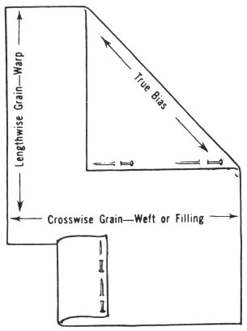
Grain lines of fabric.
Draperies must be cut on the true lengthwise and crosswise grain of the fabric so that when hung, they fall straight from the rod in even, graceful folds.
In weaving, yarns are threaded lengthwise on a loom which form the warp of the fabric. Another yarn is interlaced back and forth crosswise and is called the weft or filling thread. This is known as the plain weave. Linen, voile, chintz, etc., are a few of the plain woven fabrics. There are variations of the plain weave, such as the pile weave, with velveteen and corduroy as examples. The basket weave is another, with Monk’s cloth as an example. The diagonal line halfway between the lengthwise and crosswise threads is the bias of the fabric.
The twill weave is perhaps one of the most durable. The filling yarn forms a diagonal line, passing over one warp yarn and under two or more. Denim, drill cloth and ticking are examples of this weave.
The satin weave is an irregular weave where one yarn passes over several yarns of the other set before interweaving, forming a floating, lustrous surface.
Weaves are used in combinations to obtain the various patterns in Damasks, brocades, Jacquards, etc.
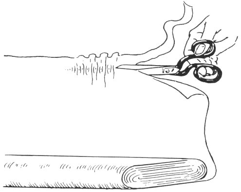
Cutting on true crosswise grain.
The yarns made from the different fibers—the natural, man-made and blended fibers—are of various sizes, weights, smoothness and fuzziness. The type of yarns used in the different weaves influences the texture of the fabric as well as its weight, lustre and durability.
When cutting drapery lengths, be sure to start with a true crosswise grain. Most firmly woven plain weave fabrics can be torn. Snip the selvage before you tear the fabric. Linens, loosely woven and nubby fabrics, novelty weaves and many others will not tear satisfactorily. To straighten these, it is necessary to pull a thread crosswise and cut on pulled line.
After cutting lengths, check to see if the ends of the fabric are square. If not, square the crosswise edge by pulling the low corner on a true bias from opposite side of the fabric. Sometimes dampening the fabric will relax the threads and make straightening easier.
| DRAPERIES | ||
| Full Length Window—48″ Material | 6 | YARDS |
| Full Length Window with Valance | 6½ | ″ |
| LINING—Full Length Window | 5¼ | ″ |
These figures are the approximate requirements. Always, where possible, take careful measurements for more accurate estimate. It is much better to have extra material than not enough.
When using materials with a large floral pattern or plaid, allow one full length of the motif for each additional length required for draperies.
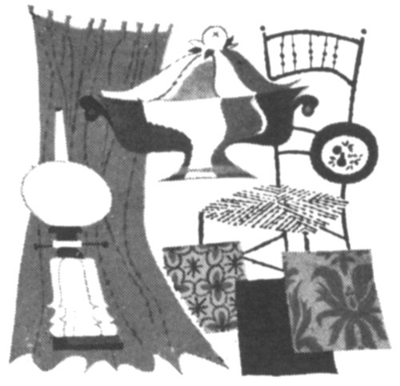
Color has a language all its own—It expresses, it soothes, it stimulates, it creates; it can give you a lift. And color as a home decorator can be made to work like magic. With color, the dullest rooms can be made to sparkle with warmth and good cheer. Any color scheme is good as long as it is balanced and it pleases you. A number of colors, tints and shades may be used in one room, but one color should be dominant and it should be used in different areas of the room. The second color should be subordinate, not of the same value. Then a third color may be used for accent or contrast. The neutral colors: gray, white and black, are good background or accent colors.
Do not overlook the possibilities of accessories, such as pillows, vases, china, lamps and books to supply an accent color to complete your color scheme.
Your color scheme may be taken from a favorite picture, a family heirloom or may express the interests and personalities of the family. Consider also the location of the room—East, West, North or South—and how the light enters the room.
There are three primary colors—red, yellow and blue. These colors are mixed to obtain secondary colors. For example, red and yellow produce the color orange; red and blue, the color violet and blue and yellow, the color green. By blending these six colors we complete the color wheel which is made up of 8 red, red orange, orange, yellow, yellow green, green, blue green, blue, blue violet and violet.
We refer to certain colors as warm, others as cool and still others as neither warm nor cool. The warm colors are red, yellow and orange. The cool colors are the blues. Green is neither warm nor cool but if mixed with yellow, it becomes warm; when mixed with blue, it becomes a cool color.
Color and line apparently change the size of the room. Cool, light colors and vertical lines make walls appear higher and the room larger, while warm colors and horizontal lines seem to lower the ceiling and draw the walls nearer.
For North and East rooms, use warm colors. If little light enters in, use light shades of the warm colors. Use the cool colors in rooms with South or West exposures.
When purchasing your fabrics for curtains, draperies and slip covers, keep in mind the overall effect. Consider the room exposure, light, size of room, furniture arrangement and what color and design will do to create a room you will always enjoy. Since windows are a very important part of the room as a unit, the fabric chosen for curtains or draperies should also be used to slip cover a sofa or chair, a dressing table cover, or a dust ruffle for the bed.
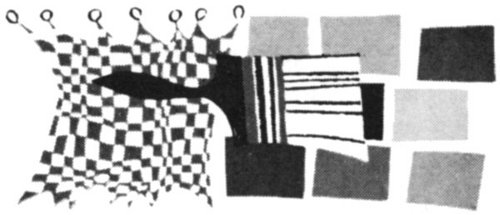
Sewing thread should blend as nearly as possible with the fabric in color, fiber and size. Silk and wool fabrics are stitched with silk thread. Cottons, linens and some blended fabrics are stitched with cotton thread or mercerized thread. The synthetic fabrics and blends of the pure and man-made fibers may be stitched with silk, mercerized 9 cotton, nylon or Dacron (DuPont) thread. The needle is selected with consideration to both the thread and the fabric.
With fabrics used for glass curtains and for sheer curtains, such as organdy, voile, “Dacron,” dotted Swiss, marquisettes, batiste and sheer linen, use a fine cotton thread, size 80 or 90, or a mercerized thread. Use a size 14 needle for mercerized thread and a size 11 for finer threads, including “Dacron” for “Dacron” fabrics, organdy, “Dacron,” marquisette, dotted Swiss, lawn, batiste and rayon lend themselves beautifully to the use of sewing machine attachments for ruffling, tucking, hemming, etc. Fiberglas stitches well and is best suited to straight panel type curtains with pleated headings. Use a mercerized thread and size 14 machine needle for Fortisan, synthetics and the many blends.
The average machine stitch length for these fabrics should be about 12 stitches to the inch and the tensions easy enough to prevent puckering the fabrics, particularly sheer fabrics, such as batiste, nylons, ninons and soft rayon blends.
For Damask, brocades, taffetas, satins, etc., use silk or mercerized thread, size 14 or 11 needles of 12 to 14 stitches per inch.
Heavy weight fabrics, namely, linens, cotton Damasks, sailcloth, ticking, denims, etc., require a heavy-duty thread, a size 16 needle and a 12 stitch length.
For light or medium weight fabrics comparable to polished cottons, Chintz, linens, Glosheen, percale, antique satin and faille, use a mercerized thread, a size 14 needle and a 12 or 14 stitch length.
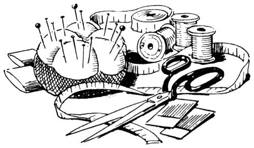
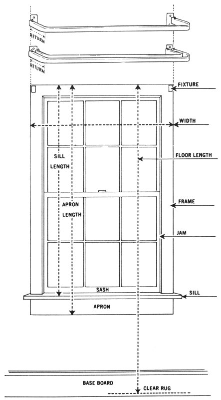
Before taking measurements, there are several points that should be taken into consideration: Is the window in proportion to the room? Will it contribute properly to the effect you wish to achieve? Do you have the right rods for hanging the type of drapery selected?
When you are satisfied with the window, then it is time to consider the type of materials for draperies and decide on the type of rod required.
It is a good idea to make a sketch of the room, noting the placement of windows and arrangement of furniture. Also take the width and height measurement of each window. Then visit the curtain and drapery department to get an idea of the type of fixtures available. At the same time, obtain small samples of the fabrics suited to the type of drapery you have in mind. Examine them in the room where they are to be used. Are they the right texture? Are the colors lively enough? Will they create the desired effect?
Purchase and mount the rods for the draperies. Fixtures should be mounted so that draperies, when hung, will cover the window frame. Now you are ready to take measurements.
There are three correct lengths for draperies—to the sill—to the lower edge of the apron—or to the floor. Full length draperies should just clear the floor or be long enough to crush on the floor.
For length—Measure from the top of the rod down—to the sill—to the lower edge of apron—or to the floor.
For width—Measure from edge to edge of window frame or from outer edges of fixture brackets. To this measurement add the “return” at either end; that is, the length from curve of rod to the wall.
The type of heading, the width of lower hem and the type of drapery; that is, lined, unlined or interlined, must be considered when estimating the yardage required. The fullness of draperies averages about twice the width of the space to be covered.
A stiffening; such as a strip of crinoline or buckram is used at the top to support the pleats.
For Lined Draperies—To length measurement, add 1″ for heading, 4″ for hem and 3½″ for bottom hem.
Example—If length from top of rod is 90″, add 1″ plus 4″ plus 3½″. This equals 98½″ for one length, or 5½ yards for the two lengths.
For Unlined Draperies—To length measurement, add 1″ for heading, 4½″ for top hem and seam, and 3½″ for lower hem. A 4″ wide strip of crinoline is used at the top of both lined and unlined drapes.
If a double hem is used at the bottom, then add 6″ instead of 3½″ for hem in either lined or unlined drapes.
For Interlined Draperies—To length measurement, add 1″ for heading, 3″ for top hem and 3″ for bottom hem.
When using ready-made headings for pleats, add to the length measurement 1½″ for heading and seam, and 3½″ for bottom hem.
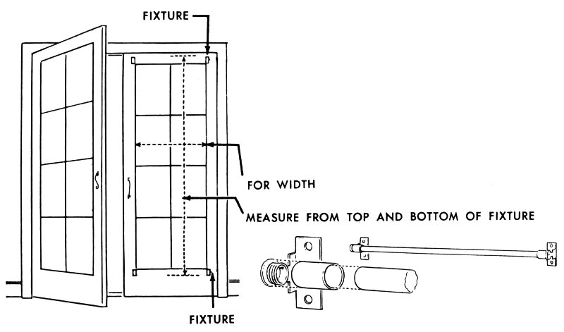
French Doors or Window
The rod should be placed so that the drapery, when hung, covers the glass portion of the window. Take measurement from top of upper rod to lower part of lower rod. To this measurement, add 2½″ at the top and 2½″ at the bottom. This allows for a 1½″ hem, top and bottom, plus ¼″ seam allowance. The 1½″ hem is for a ¾″ casing and ¾″ heading.
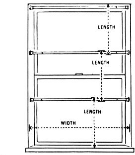
When draperies are hung flush with the wall, measurements are taken inside the recess. A spring socket type of fixture is available for this type of window. Always measure from the top of the rod, except for Cafe curtains. Usually a ring, “sew-on” or “clip-on” type is used. In this case, measure from lower part of circle to lower part of next section, or to the sill. Add depth of top finish plus hem to this measurement.
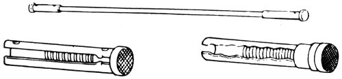
Oval spring socket. Round spring socket.
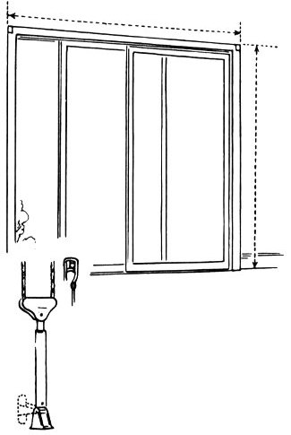
Hook over or dual wheel design. Cord tension pulley. Install on wall, baseboard or floor.
These windows are usually treated as one. Draperies, in two sections, are hung on a pole or traverse rod and are drawn to the center, one section overlapping the other about 2″. Take length measurement from top of rod to the floor. To this measurement, add 5½″ for heading and top hem and 3½″ for bottom hem. If double hems are used, add 9″ at the top plus 6″ for bottom hem. To the width, add 3″ at either end for return of curtain from fixture to wall.
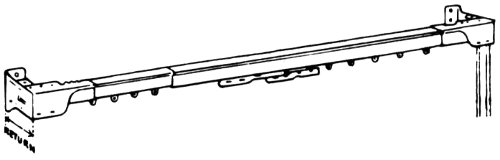
Two-way traverse rod.
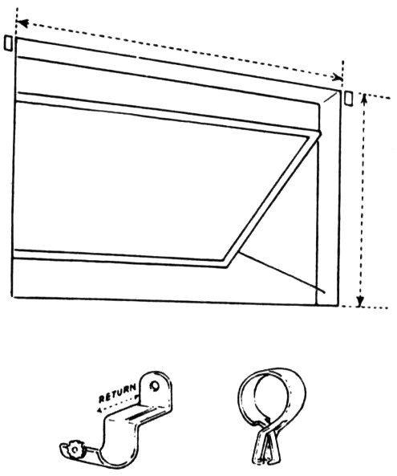
To permit ease when opening or closing the window, the fixture should extend a little beyond the window on either side. Use a simple fixture, an oval or round rod, and a draw type of drapery. If drapery is to be shirred on the rod, take measurement from top of rod to lower edge of window. To length measurement, add 2½″ for a 1½″ hem which forms the casing and heading, and 2¾″ to 2½″ bottom hem. If sew-on or clip-on rings are used, measure from lower circle of ring to edge of window. To this measurement, add depth of top and bottom hem.
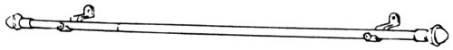
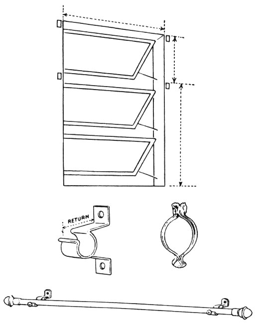
The type of drapery determines points of measurement. With tier type draperies, one for each section of the window, the measurements are taken from top to bottom of each section. Draperies hung from the top extending to lower edge of window or floor are measured from top of fixture for length desired. Tier type or cafe sections should be long enough to overlap the heading of the section below. Follow same procedure for measuring as for projected window. These draperies should be full—1½ times the width for medium weight fabrics, such as Chintz, Glosheen, etc., to three times the width when using sheer fabrics.
Curtain and drapery rods, brackets and valance boards should be mounted securely to the wall to support heavy draperies. This can be a problem unless you use the right screws or bolts. There is a correct screw and bolt available for every type of wall—brick, concrete or plaster walls.
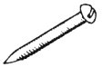
PLASTER SCREW—For plaster or dry walls.
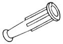
PLASTIC PLUG—Use in brick wall for plug, then insert screw.
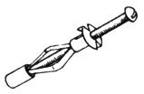
MOLLY BOLT—Use in plaster, brick or concrete wall.
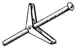
TOGGLE BOLT—Use in frame or plaster walls where there is a separation between outer and inner walls.
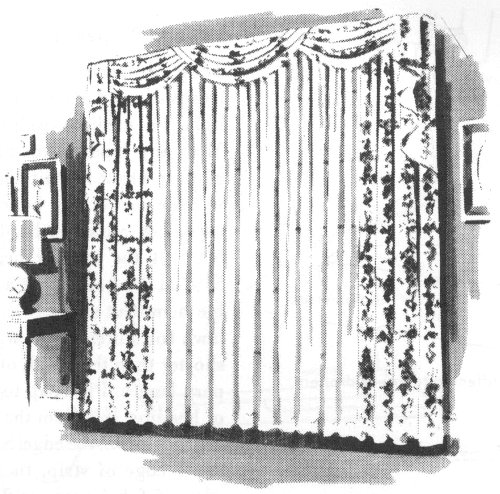
Draperies or over curtains are made of medium weight or heavy fabrics. They may be unlined, lined or lined and interlined, depending on the fabric and its treatment—whether formal or informal.
There are three accepted lengths for draperies—to the window sill—to the bottom of the window apron—or to the floor. Floor length is most generally used, and for very formal treatments, the drapery is often made long enough to crush on the floor. Draperies hang straight from the rod to the floor. If they meet at the top center, they may be draped to either side and held with ornamental tie-backs or those made of the same material.
When the type and design of draperies have been decided upon and the right type of rods have been mounted, then measurements for draperies can be taken.
Measure from the top of the rod down for length desired. Then add to length measurement the allowance for top and bottom hems. Review chapter on “Fabrics” before cutting lengths for draperies.
These draperies are informal in treatment and are usually made of light or medium weight fabrics. Most any type of top finish, shirring or pleats is suitable. A plain valance or cornice board may be used. For a pleated heading, allow 5½″ at the top for heading and 5½″ at the bottom for a 2½″ double hem. Cut strips of crinoline or lawn for stiffening 4″ wide and 3″ shorter than the width of each drapery length. Pin strip to underside of heading ½″ from the top, starting 1½″ from the edge. Stitch along lower edge of strip, then turn top edge of fabric over stiffening ½″ and stitch. Turn top hem to underside along edge of stiffening. Press and pin in place.
Side hems may be put in by hand, machine stitched or blind stitched. For hand stitching or straight machine stitching, turn edge ½″ to underside; then turn 1″ for hem. Pin hem in place for stitching.
To blind-stitch hem, using the Zigzag Sewing Machine or the Zigzag Attachment, pin hem in place; then run a row of hand basting ¼″ from turned edge. With wrong side of drapery up, turn hem under to right side, exposing the ¼″ edge. Turn 2½″ double hem at the bottom and finish by hand or machine stitch.
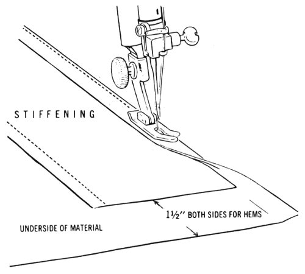
Stitch stiffening to top of drapery.
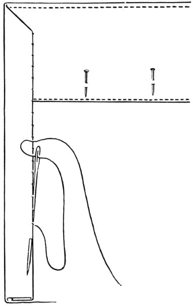
Finish side hem by hand, using slip-stitch.
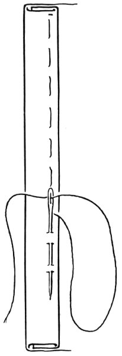
Side hem basted for blind-stitch hemming.
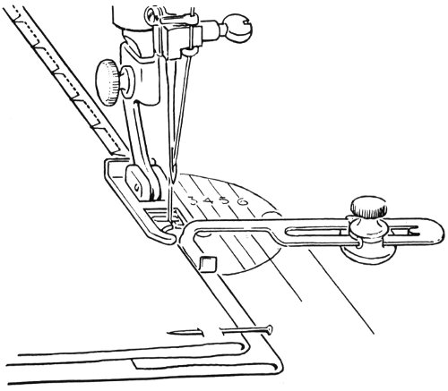
Blind-stitch hemming, using the Zigzag Sewing Machine.
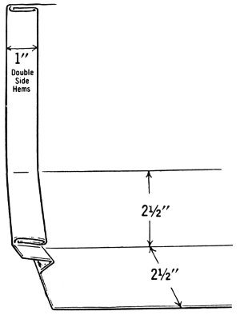
Double hems with corners cut out to relieve bulk.
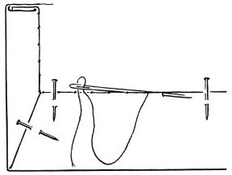
Finishing double side hems and bottom hem by hand.
If 1″ double side hems are used, cut stiffening 4″ shorter than the width of each drapery length. When using a heading with woven-in pockets for pleater pins, (available by the yard) allow 2″ at the top for heading and seam. Pin right side of heading to right side of drapery ⁵/₁₆″ below edge across the top. Consider the ″return″ of the drapery at each side, and position woven-in pockets so that the pleat comes at the turn of the rod. Stitch, taking ½″ seam; then turn heading to underside. Press and stitch ¼″ from the lower edge of the heading.
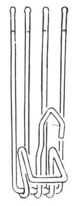
Type of hook used for forming pleats and hanging draperies.
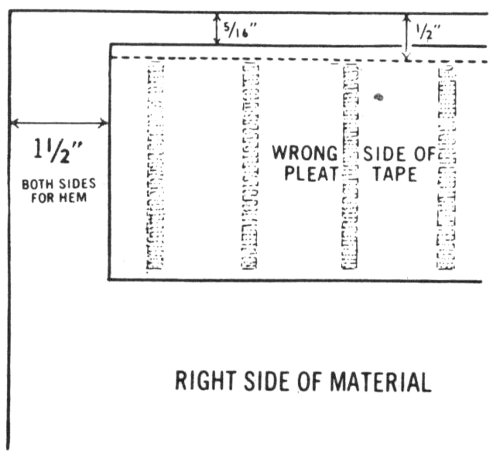
RIGHT SIDE OF MATERIAL
Place pleat tape at top, ⁵/₁₆″
from edge. Stitch ½″ from edge.
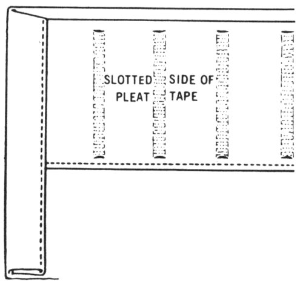
Tape turned to underside. Stitch tape to drapery at lower edge. Machine stitch 1″ side hems.
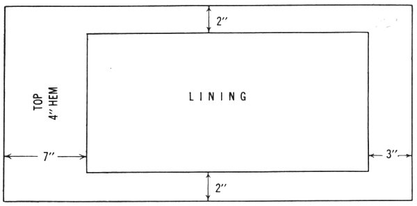
Lining in proportion to drapery length.
Draperies are lined for the protection of the fabric. Linings also give weight to the draperies, causing them to hang in deeper folds. A sun-fast white, soft gray or cream colored sateen is generally used as the lining fabric.
Linings, just as drapery fabrics, must be cut straight with the crosswise and lengthwise grains.
Always start with a straight crosswise edge. This is obtained by drawing a crosswise thread and cutting on drawn thread. If fabric slopes up on one edge, then it should be straightened before pieces are cut.
Very often, when fabrics are rolled on the boards at the mills, the fabric is rolled more tightly on one end than at the other, drawing the crosswise threads (weft) in a diagonal line. This is apt to be true in loosely woven fabrics and particularly lining fabric.
To straighten fabric, first remove selvages, pull fabric gently but effectively, stretching it diagonally from corner to corner; then alternate. Grasp the fabric so that you will neither injure nor wrinkle it. Press before seaming.
Lining should be cut to allow for a 2″ hem at the bottom and a ½″ seam across the top and sides.
Illustration is for a drapery 2½ yards long, finished with 4″ top hem, 1″ side hems and 3″ bottom hem. Drapery length would measure 20 98½″ and lining length, 88½″. The average hem widths, 3″ and 4″, were used in figuring measurements. The width of hems vary. There is no fixed rule. They may be 3″—4″—5″ or even 7″ at the top and 2″—2½″—3″ or 4″ at the bottom. In many cases the bottom hem is doubled, particularly in sheer or lightweight fabrics. Also the center side hem may be as much as 2″ wide and the outer hem 1″. In this case, the lining is cut 6″ narrower than the drapery. Before taking measurements for draperies, review section on Window Measurements.
To join lining, turn top edge of lining to underside ½″ and press. Pin lining and drapery together, starting 7½″ from the top. Stitch from top of lining down to 4½″ of lower edge of lining, taking a ½″ seam. Back-stitch at the beginning and end of seam. Press seam as stitched; then clip seam every 3″ or 4″. Press the seam open. Pin, from hem to hem, a 4″ wide strip of stiffening to underside across the top. Stitch and press.
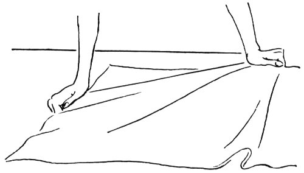
Straightening material—Pull diagonally from low corner.
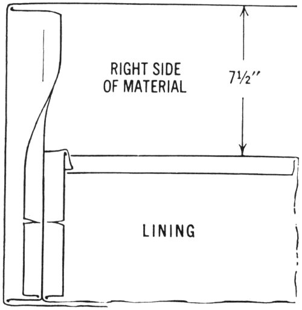
Joining lining to drapery.
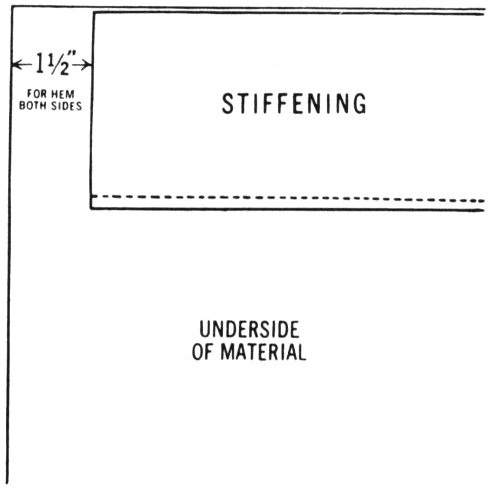
Stiffening stitched to heading.
Turn drapery right side out and adjust hems on either side. Be sure seams are spread open. Press and pin. Turn top hem to underside. Pin and press. Turn and miter side 21 hem. Cut out top hem even with stiffening and within 1″ of the top. Pin lining to hem, overlapping lower edge ½″. Side hem and mitered corner above the lining should be slip-stitched by hand; then slip-stitch lining to top hem. Press. Allow draperies to hang for 2 or 3 days before putting in lower hems. Then adjust length of drapery so that it clears the rug or floor. Turn edge under ½″; then turn hem width. If an allowance is made for a double hem, first turn to underside one-half the width allowed, then turn again the same width, enclosing first turn. Slip-stitch hem by hand or stitch by machine. The lining hem overlaps the drapery hem approximately 1″. Allowance is made for a 2″ hem with ½″ for seam. The lining hem hangs free of the curtain and is held in position with french tacks spaced about 12″ apart. To french tack, take 3 or 4 stitches first at top of drapery hem, then lining hem, then drapery hem, etc., leaving a ½″ or ¾″ length between. Blanket stitch over the full length of these strands of thread. Fasten thread at end of tack. Draperies should be anchored at top of return and lower side hems.
Use a sew-on or pin-on weight at bottom of center hems.
(See illustration at top of page 22.)
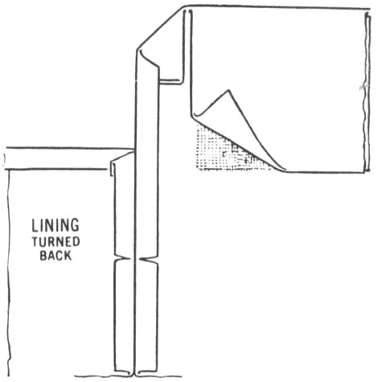
Cut out end of top hem to eliminate bulk.
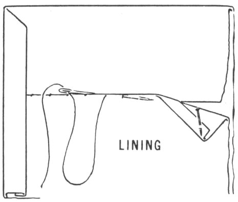
Lining slip-stitched to top hem.
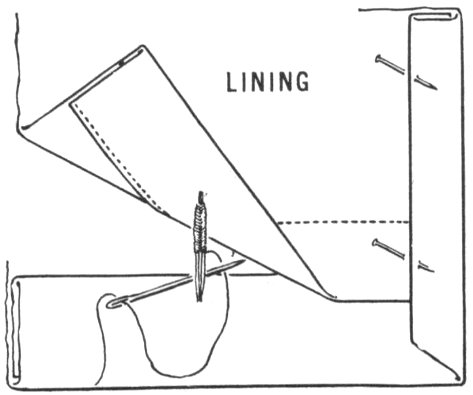
Making a French tack.
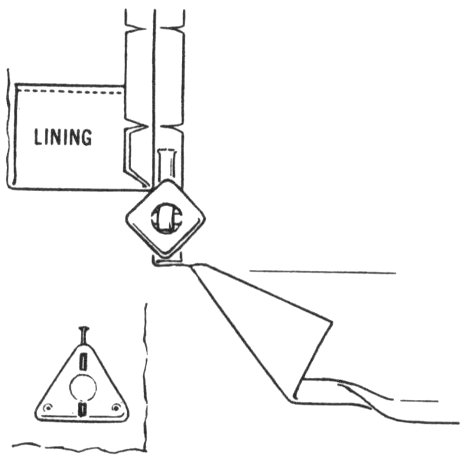
‘Sew-on’ or ‘pin-on’ weights.
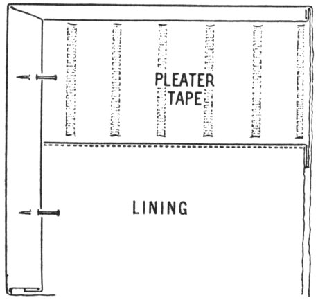
Lined drapery with pleater tape heading.
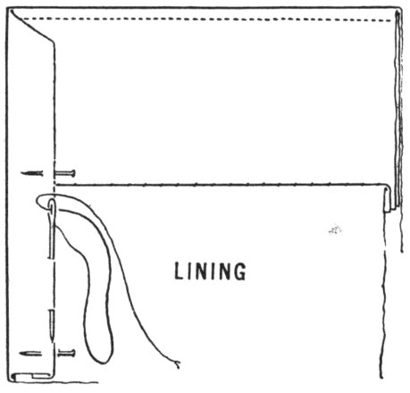
Side hems tacked to insure evenness.
When using a tape with woven-in pockets for pleater pins, allow 2″ above the rod for heading and seam. See instructions under the section Unlined Draperies for joining tape to heading. Join lining; then clip and press seams. Turn drapery to right side and pin lining to bottom of tape, overlapping ¼″. Stitch and press; then finish side hems above lining by hand.
It is a good idea to tack the side hems along stitching line. This prevents them from slipping and hems always appear sharper. Using matching thread and working from the underside, insert needle through the seam down through to the right side, picking up a thread or two of the fabric. Then bring needle back up through the seam. Insert needle at the same point and direct needle along the seam between the hem a distance of 1″. Bring needle up through seam; then direct needle down through seam at same point, picking up two or three threads, and then up through seam again. Continue this tacking the length of the hem.
There are times that draperies are lined to the top instead of using a hem, particularly when a valance or cornice board is used. To the length 23 measurement, add 1½″ at the top for heading and seam. Cut lining in proportion. Stitch lining and drapery lengths together, bringing edges even at the top. Clip seam and press open. Cut stiffening the length of drapery width. Pin and stitch stiffening across the top, taking ½″ seam. Turn drapery right side out, enclosing heading. Press top and side hems. Finish hems at the bottom the same as for lined draperies.
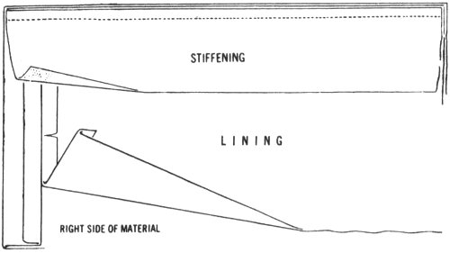
Joining stiffening to lining and drapery at top.
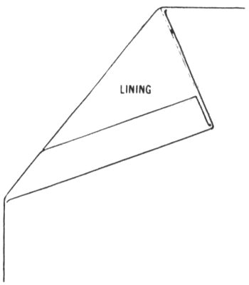
Drapery turned to right side.
Draperies are often interlined, particularly in very formal rooms, or when the character of the material is such that the extra weight is necessary for its protection. Interlining also adds to the draping quality and elegance of the fabric.
For an interlining fabric, use good quality cotton flannel. Cut interlining the exact measurements of draperies when finished; that is, if draperies have 1½″ hems on each side and 3″ hems, top and bottom, then cut interlining 3″ narrower and 6″ shorter than drapery fabric. Spread material right side down.
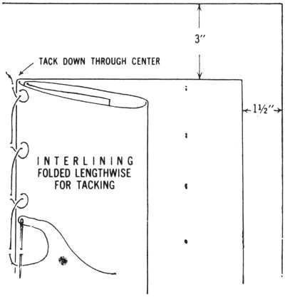
Tack interlining to drapery at center and between center and side hems.
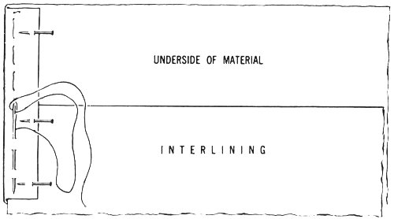
Turn and baste hems—side, top, and bottom.
Fold interlining through lengthwise center. Place fold on exact center of drapery fabric and tack together loosely. Take a stitch in the drapery; bring needle up through fold of interlining and leave a loop. Space about 6″; take a stitch in drapery, then interlining, then drapery, etc. Do not pull thread taut. When row is finished, fold interlining halfway between center and edge on both sides and tack in the same manner, making three rows of vertical tacking.
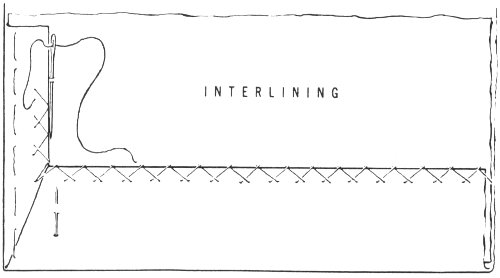
Catch-stitch hems to interlining.
Turn side hems back over interlining. Pin and baste. Then turn top and bottom hems. Pin and baste. Miter hems at corners. All hems may be catch-stitched to the interlining, and the lining slip-stitched to top and side hems. Linings may also be joined by machine. Turn hem and baste; then pin lining to drapery and stitch, taking ½″ seam. Press seam as stitched. Then clip and press seam open the same as for all lined curtains and draperies.
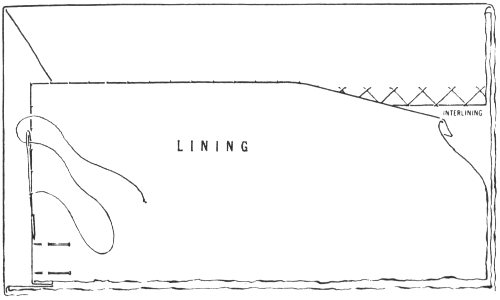
Turn sides and top of lining under ½″. Pin in place, slip-stitch.
When lining is joined to drapery by machine, tack interlining and lining together along seam. Take stitch in seam, then in interlining. Space stitching 3″ or 4″ apart. Do not draw thread taut. Turn top and bottom hems and catch-stitch. Pin lining to hem across the top and slip-stitch. Turn hem in lining and stitch. Allowance should be made for a 2″ hem, overlapping the hem in drapery approximately 1″. Use french tacks between lining hem and drapery to hold lining in place. Use either ‘sew-on’ or ‘pin-on’ weight at bottom of side hems.
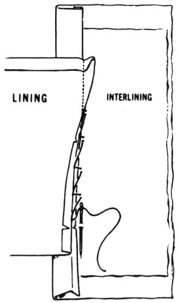
When lining is machine stitched to drapery, tack seam to interlining.
French tacks hold drapery and lining together.
The use of pleats is one of the most effective ways of controlling the fullness of a drapery that is made to hang in balanced, graceful folds. The types most generally used are the pinch pleat, the French pleat, the box pleat and the cartridge pleat.
Pleats should be made in groups of uneven numbers, 5-7-9, or as many as are required to take up the amount allowed for fullness. For very sheer fabrics, the allowance for fullness should be 3 times the width of the window or space to be covered. To figure the spacings and amount to be taken up in pleats, take the measurement of the space to be covered plus the return; that is, the distance from turn of rod to the wall or the bracket supporting the rod on either end, plus the overlap at the center when curtains are drawn together. The width allowed for draperies minus these three measurements is to be taken up in pleats.
The fullness of each type of pleat and space between depends on the weight of the material and amount allowed for fullness of the curtain.
For Example: If one half of the width to be covered is 49″ then one section of the drapery would be about 144″ wide after finishing side hems. To width of window area (49″), add 3″ for return and 1″ for center overlap. This totals 53″. 144″ minus 53″ equals 91″ for pleats. Allowing 7″ for each pleat, 13 pleats will be required to take up the fullness.
Please Note—3″ for return is used as an example. The return can be 4″ or 5″, depending on type of rod or bracket. Always measure the return.
Always measure and mark the exact position and width for all pleats and spacings before stitching.
Measure the width of the return from outer edge. Then measure for the first pleat at the curve of the rod. Place second pleat on opposite side 2″ from center edge. The third pleat is placed at the exact center between the first and second pleat. The remaining number of pleats required is evenly spaced between the 1st and 3rd and between the 2nd and 3rd pleats. To form pleats, bring markings for pleats together. Pin; then stitch from top to ¾″ below the heading, reversing the stitch at either end.
1. Bring the markings together for pleat and pin.
2. Stitch from top to about ¾″ below heading, reversing stitch at each end.
These steps are the same for all types of pleats.
Pinch Pleat—Divide the large pleat evenly into three smaller pleats; press in firmly and stitch across the three folds at lower edge of heading. The Pinch pleat is a favorite finish for most types of draperies and is particularly good when draperies are made of a heavier fabric.
French Pleat—At lower edge of heading, divide large pleat into three smaller pleats and run needle and thread through three pleats several times, drawing thread tight. Then fasten thread securely underneath.
Box Pleat—The large pleat is spread an equal distance on each side of stitching and pressed flat. Box pleats should be about 2″ wide, taking up 4″ fullness.
When figuring these pleats, try for uniformity; that is, the space between each pleat (from fold to fold) should be the same as the width of pleat. Box pleats should be about 2″ wide, taking up 4″ fullness.
Cartridge Pleat—This is a round pleat left loose and filled with cotton, Kapok or a roll of stiff paper. The pleats take up 2″ to 2½″ and are spaced from 2″ to 3″ apart for draw type draperies.
1. Type of pins used if curtain is hung from traverse rod.
2. Type of pins used if curtain is hung from rod with rings or from traverse rod mounted against ceiling.
Box Pleats, extending above the heading to form a loop, make an interesting treatment for unlined curtains draping a French window or door that opens out.
Draperies hang from a rod drawn through the loops. Fabrics, such as Fortisan blends, antique satin, taffetas and sheer linens are suitable for these curtains.
Measure from top of rod to floor for length. Add 9½″ at top for seam, loops, and facing and 6″ for a 3″ double bottom hem. Allow 3 times the width of space to be covered for fullness.
Example: If space to be covered is 52″, 3 lengths of 48″ fabric are required. Cut one length through center and join each half width to each one of the full widths. Each section measures approximately 70″. 70″ minus 4″ for 1″ double hems and 3″ for return equals 63″. 7 pleats × 5″ = 35″. 63″ minus 35″ = 28″ for space to be covered and center overlap.
1. Measuring for pleats, spacings and loops. Pleats may be wider or as narrow as desired. Spacings may vary, depending on weight of material. Always consider the pleat overlap.
2. Turn top to right side 9½″. Use a stiffening or stay of lawn or organdy for most light and medium weight materials. Arrows indicate stitching lines.
3. Material is cut out between loops. Seams are slashed diagonally at corners to line of stitching. Press. If stiffening is not used as shown in sketches 1 and 2, stitch 4″ strip of crinoline to hem as shown above. This lends support to pleats.
4. Turn loops right side out and hem to underside. Press. Pin in pleat, stitch same as for Box pleat. Spread pleat, press.
5. Fasten loops to back of pleat by hand. Anchor curtains at side, top and bottom as shown page 15.
Pattern for tie-back pinned to material.
Tie-back stitched—Seam blended ready for turning.
Fabric tie-backs for draperies are usually tailored, straight or shaped bands which match or harmonize with the drapery in color and design. The fullness of the drapery determines the length of the tie-back. To estimate length, loop a strip of material around the drapery, drawing it back to side of window for the best effect. Lengths may vary from 18″ to 24″ and can be 2½″ or more in width. They are usually lined or faced and interlined. Use a stiffening of heavy muslin or crinoline in a shaped band. For shaped band, cut a paper pattern about 3″ or 4″ wide in the center, tapering to 2″ or 2½″ at the end as illustrated. Cut fabric, lining and stiffening the same as pattern, allowing for a ⅜″ seam on all edges.
Pin stiffening to underside of band, and lining to right side of material—right sides together. Stitch, leaving an opening of 3″ or 4″ for turning.
Trim stiffening to stitching line and blend edge of lining. Press. Turn band right side out and press. Slip-stitch lining to band at opening.
Sew small bone rings or very narrow fabric loops at ends of band. These loop over a hook fastened to side of window.
Outside edges of draperies should hang against the wall in a straight taut line. Sew a plastic ring to the bottom hem. Place a cup hook in the wall or the baseboard in line with the hem.
New Golden Touch & Sew[1] sewing machine by Singer. Be the girl with the golden touch on this newest and most fabulous of our growing family of Touch & Sew sewing machines with the Push-Button Bobbin. One of five new models starting at $149.95.
See SINGER COMPANY in phone book for Shop nearest you.
SINGER SEWING LIBRARY
You’re sure to want a complete set
Here are the newest, most informative, “how to” sewing books available today! Together they make up a complete dressmaking—home decorations library. Fully illustrated, each one covers its subject step-by-step, answering all your questions—in as few words as possible—almost before you ask them. Choose your needs from the selection of books listed below.
Singer Sewing library Books are available at Singer Centers, variety, chain and department stores ... where you will also find the SINGER SEWING SHELF—for sewing machine parts and supplies.
Cover Photograph reprinted from the BRIDE’S MAGAZINE
Copyright 1957, The Condé Nast Publications, Inc.
Printed in the United States of America Book No. 102